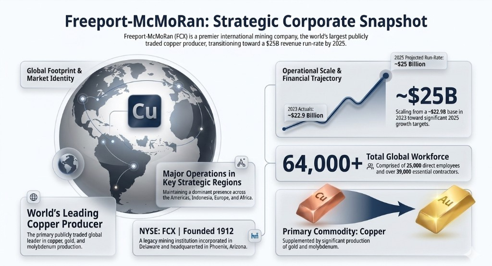

About
Freeport-McMoRan
Foundational context about Freeport to help teams understand the client’s business, scale, and strategic importance.
Company snapshot

2.2 Evolution timeline
- 1912: Company founded (sulfur mining origins)
- 1913–1950s: Expansion across sulfur, manganese, nickel
- 1959–1972: Indonesian copper discovery and mining operations
- 1967–1981: Formation and merger into Freeport-McMoRan
- 1988: Grasberg mine discovery (one of the largest globally)
- 2007: Acquisition of Phelps Dodge (major expansion)
- 2012–2016: Oil & gas diversification (later reversed)
- 2018–present: Strategic restructuring and copper focus
- 2024–2026: Positioned as a “technology enabler” for global energy transition
2.3 Current management
![Freeport-McMoRan Current Management as of May 2026. Row one: Kathleen L. Quirk, President and Chief Executive Officer (CEO since June 2024); Richard C. Adkerson, Executive Chairman of the Board (Chairman since May 2019); Maree E. Robertson, Executive Vice President and Chief Financial Officer; Douglas N. Currault II, Executive Vice President and General Counsel; Stephen T. Higgins, Executive Vice President and Chief Administrative Officer. Row two: Mark Johnson, Executive Vice President, Freeport-McMoRan Indonesia; Joshua F. Olmsted, President and Chief Operating Officer (Americas); Michael J. Kendrick, President, Climax Molybdenum; Javier Targhetta, President, Atlantic Copper; Bertrand Odinet II, Chief Innovation Officer and Chief Information Officer. Row three: William E. Cobb, Vice President and Chief Sustainability Officer; Pamela Q. Masson, Vice President and Chief Human Resources Officer.](../img/freeport-leadership-key-roles-may-2026.png)
2.4 Path to autonomous mining — data transformation journey
End-to-end arc from legacy warehouses and Hadoop through Snowflake-ready analytics, massive connected-fleet telemetry, and autonomy-oriented use cases tied to production, cost, and safety outcomes.
![Infographic titled The Technological Evolution (The Data Journey), covering the path to autonomous mining. Top: technology evolution from SAP BW and Teradata through Hortonworks Hadoop and SAP BO to Snowflake on Azure, ADLS, Power BI, and integration from S/4HANA to Snowflake yielding analytics-ready data. Middle: about 60,000 readings per second from 200 sensors on each of 300 trucks, twelve mining sites, and GPS and GIS IT/OT integration. Lower: predictive maintenance and risk clustering with random forest; about 95 percent jam detection roughly eight minutes before operator action using deep learning and video analytics; AI-driven fleet navigation with CAT MineStar; leach and blast analytics. Bottom right: about 200 million pound production boost, about 50 percent lower total cost of ownership, and worker safety and fatigue analysis.](../img/freeport-path-to-autonomous-mining.png)
2.5 Key operations & assets

2.6 Key insights / facts
~14,000 ft
Grasberg operates at ~14,000 ft elevation.
AI and data centers are significantly increasing copper demand.
~70%
Of US refined copper production is linked to Freeport.
The “Hidden Mine” concept enables extraction from waste rock.
Strong geopolitical relevance due to a global mining footprint.